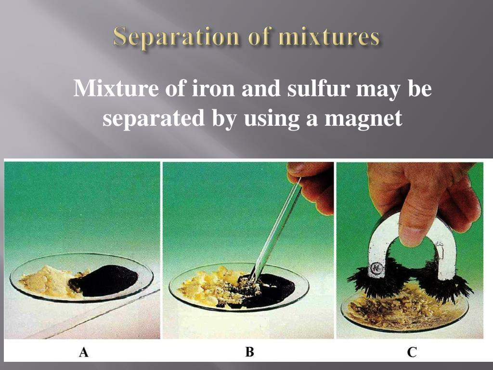
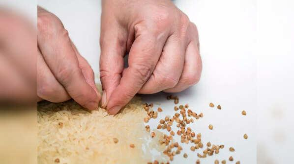
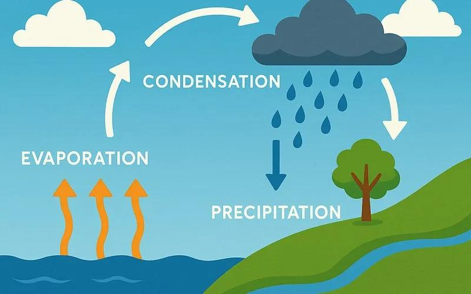

📘 Chapter 09: Methods of Separation in Everyday Life – Questions and Answers
1. Choose the Correct Answer
Question 1. Which method is used to separate bigger particles in wheat flour?
- Sieving
- Filtration
- Winnowing
- Threshing
Answer: (a) Sieving.
Question 2. Which method can be used for the separation of a solid from a liquid?
- Handpicking
- Filtration
- Threshing
- Winnowing
Answer: (b) Filtration.
Question 3. Which of the following objects can be used to filter out sand from water?
- Sieve
- Funnel
- Filter paper
- Burner
Answer: (c) Filter paper.
Question 4. Which method is involved during the preparation of cottage cheese?
- Threshing
- Filtration
- Winnowing
- Sieving
Answer: (b) Filtration.
Question 5. Which process can be used to recover water from sugar solution?
- Evaporation
- Sedimentation
- Decantation
- Condensation
Answer: (d) Condensation. Water is first converted into vapour by heating and then collected as liquid by cooling.
2. Write True or False. Also, Rectify the Incorrect Statements.
Question 1. Evaporation can be used to separate salt and water.
Answer: True.
Question 2. Soluble substances can be separated from a solution by filtration.
Answer: False. Soluble substances cannot be separated from a solution by ordinary filtration. They can be separated by evaporation.
Question 3. Nickel is a magnetic substance.
Answer: True.
Question 4. The process of conversion of vapour into liquid is called condensation.
Answer: True.
Question 5. We can separate mud from muddy water by sieving.
Answer: False. Mud can be separated from muddy water by sedimentation and decantation or by filtration.
3. Match the Columns
| Column A | Column B | Correct Match |
|---|---|---|
| 1. Rice grains and peanuts | (b) Handpicking | 1 – (b) |
| 2. Sawdust and water | (e) Filtration | 2 – (e) |
| 3. Sugar and water | (d) Evaporation | 3 – (d) |
| 4. Tea leaves from tea | (a) Strainer | 4 – (a) |
| 5. Iron filings and sugar | (c) Magnetic separation | 5 – (c) |
4. Name the Method Used to Separate the Following Components
Question 1. Talcum powder and water.
Answer: Filtration.
Question 2. Salt and water.
Answer: Evaporation.
Question 3. Pebbles and salt.
Answer: Handpicking.
Question 4. Sand and iron filings.
Answer: Magnetic separation.
Question 5. Mud and water.
Answer: Sedimentation and decantation.
5. Give One Word for the Following
Question 1. Separation of substances from a liquid by allowing them to settle at the bottom of the vessel.
Answer: Sedimentation.
Question 2. Conversion of gas into its liquid form.
Answer: Condensation.
Question 3. Mixture of solute and solvent.
Answer: Solution.
Question 4. The process used to separate common salt from seawater.
Answer: Evaporation.
Question 5. The method in which the clear liquid is poured out without disturbing the sediments.
Answer: Decantation.
6. Give One Example of a Mixture That Can Be Separated by the Following Methods
Question 1. Sedimentation and decantation.
Answer: Mud and water.
Question 2. Magnetic separation.
Answer: Iron filings and sand.
Question 3. Filtration.
Answer: Sand and water.
Question 4. Handpicking.
Answer: Stones and rice grains.
Question 5. Evaporation.
Answer: Salt and water.
7. Define the Following Terms
Question 1. What is sedimentation?
Answer: Sedimentation is the process in which heavier, insoluble particles settle down at the bottom of a liquid when left undisturbed.
Question 2. What is winnowing?
Answer: Winnowing is the method of separating lighter particles from heavier particles with the help of wind.
Question 3. What is threshing?
Answer: Threshing is the process of separating grains from the stalks of harvested crops.
Question 4. What is filtration?
Answer: Filtration is the process of separating insoluble solid particles from a liquid by using a filter.
Question 5. What is decantation?
Answer: Decantation is the process of carefully pouring out the clear liquid without disturbing the settled solid particles at the bottom.
8. Answer the Following Questions Briefly
Question 1. Why do we need to separate the components of a mixture?
Answer: We need to separate the components of a mixture for the following reasons:
- To remove unwanted substances.
- To remove harmful impurities.
- To obtain useful substances.
- To get cleaner or purer materials for use.
Question 2. What is the difference between sedimentation and decantation?
Answer:
| Sedimentation | Decantation |
|---|---|
| It is the process in which heavier particles settle at the bottom of a liquid. | It is the process of carefully pouring out the clear liquid. |
| It takes place when a mixture is left undisturbed. | It is done after sedimentation. |
| Example: Mud settling at the bottom of water. | Example: Pouring clear water from a vessel containing settled mud. |
Question 3. How can you separate a mixture of sand and water?
Answer: We can separate sand and water by filtration.
- Take the mixture of sand and water.
- Place filter paper in a funnel.
- Pour the mixture into the funnel.
- Water passes through the filter paper.
- Sand remains on the filter paper.
The water collected below is called the filtrate, and the sand left behind is called the residue.
Question 4. How are soluble substances separated from a solution?
Answer: Soluble substances can be separated from a solution by evaporation. When the solution is heated, the liquid evaporates and the dissolved solid is left behind. For example, salt can be obtained from salt water by evaporation.
Question 5. Name the method in which wind is used to separate the lighter particles from the heavier components.
Answer: Winnowing.
9. Answer the Following Questions in Detail
Question 1. How will you separate a mixture of iron filings and sulphur? Explain.
Answer: We can separate iron filings and sulphur by using the method of magnetic separation.
Materials Required:
- A mixture of iron filings and sulphur.
- A magnet.
- A sheet of paper.
Procedure:
- Spread the mixture of iron filings and sulphur on a sheet of paper.
- Take a magnet and move it over the mixture.
- Iron filings will be attracted towards the magnet.
- Sulphur will remain on the paper because it is not attracted by the magnet.
- Remove the iron filings from the magnet carefully.
Observation: Iron filings stick to the magnet, while sulphur remains on the paper.
Conclusion: Iron filings and sulphur can be separated by magnetic separation because iron is magnetic but sulphur is not.

Question 2. When can handpicking be chosen as a method of separation?
Answer: Handpicking can be used when:
- The unwanted particles are present in small amounts.
- The particles are large enough to be seen easily.
- The components are different in size, shape or colour.
- The unwanted particles can be picked out by hand.
Examples:
- Removing stones from rice.
- Removing damaged grains from wheat.
- Separating peanuts from rice grains.

Question 3. Give the ways by which grains can be separated from stalks.
Answer: Grains can be separated from stalks by the following methods:
1. Threshing
Threshing is the process of separating grains from the stalks of harvested crops. It can be done by beating the harvested crop or by using a threshing machine.
2. Traditional Method
Farmers may beat the harvested stalks against a hard surface to separate the grains.
3. Threshing Machine
A threshing machine separates grains from stalks quickly and easily.
Conclusion: Threshing is the main method used to separate grains from stalks.

Question 4. How are evaporation and condensation different from each other?
Answer: Evaporation and condensation are opposite processes.
| Evaporation | Condensation |
|---|---|
| A liquid changes into vapour. | Vapour changes into liquid. |
| It usually takes place on the surface of a liquid. | It takes place when vapour cools. |
| It occurs when a liquid gains heat. | It occurs when vapour loses heat. |
| Example: Drying of wet clothes. | Example: Water droplets forming on a cold glass. |
Conclusion: Evaporation changes liquid into vapour, while condensation changes vapour into liquid.

Question 5. Explain an activity to show the separation of components of a solution of sand and salt.
Answer: We can separate sand and salt from their mixture by using filtration and evaporation.
Materials Required:
- A mixture of sand and salt.
- Water.
- A beaker or glass.
- Filter paper.
- Funnel.
- A heating source.
- A dish.
Procedure:
- Take the mixture of sand and salt in a beaker.
- Add some water and stir it well.
- Salt dissolves in water, but sand does not dissolve.
- Place filter paper in a funnel.
- Pour the mixture through the filter paper.
- Sand remains on the filter paper, while salt solution passes through it.
- Collect the salt solution in a dish.
- Heat the solution carefully until the water evaporates.
- Salt is left behind in the dish.
Observation:
- Sand remains on the filter paper.
- Water evaporates from the salt solution.
- Salt is left behind in the dish.
Conclusion: Sand and salt can be separated by using filtration and evaporation.

10. Additional Important Questions and Answers
Question 1. What is a mixture?
Answer: A mixture is formed when two or more substances are mixed together without forming a new substance.
Question 2. What is handpicking?
Answer: Handpicking is a method of separating unwanted particles from a mixture by picking them out by hand.
Question 3. What is sieving?
Answer: Sieving is a method of separating particles of different sizes with the help of a sieve.
Question 4. What is magnetic separation?
Answer: Magnetic separation is a method of separating magnetic substances from non-magnetic substances using a magnet.
Question 5. What is evaporation?
Answer: Evaporation is the process in which a liquid changes into vapour, usually due to heat.
Question 6. What is a solution?
Answer: A solution is a uniform mixture of a solute and a solvent.
Question 7. What is a solute?
Answer: A solute is a substance that dissolves in a solvent. For example, salt is the solute in salt water.
Question 8. What is a solvent?
Answer: A solvent is a substance in which another substance dissolves. For example, water is the solvent in salt water.
Question 9. What is filtration used for?
Answer: Filtration is used to separate insoluble solid particles from a liquid.
Question 10. Why is winnowing useful for farmers?
Answer: Winnowing helps farmers separate lighter husk from heavier grains with the help of wind.
Question 11. How is salt obtained from seawater?
Answer: Seawater is collected in shallow ponds. The Sun heats the water and causes it to evaporate. Salt is left behind.
Question 12. Why can salt not be separated from salt water by filtration?
Answer: Salt dissolves completely in water and passes through ordinary filter paper along with water. Therefore, filtration cannot separate dissolved salt from water.
Question 13. What is a residue?
Answer: The insoluble solid left behind on the filter paper after filtration is called the residue.
Question 14. What is a filtrate?
Answer: The liquid that passes through the filter paper during filtration is called the filtrate.
Question 15. What is the difference between soluble and insoluble substances?
Answer:
| Soluble Substances | Insoluble Substances |
|---|---|
| They dissolve in a liquid. | They do not dissolve in a liquid. |
| Example: Salt in water. | Example: Sand in water. |
11. Quick Revision – Important Points
- Handpicking is used to remove unwanted particles by hand.
- Sieving separates particles of different sizes.
- Winnowing separates lighter particles from heavier particles using wind.
- Threshing separates grains from stalks.
- Magnetic separation uses a magnet.
- Sedimentation allows heavier particles to settle at the bottom.
- Decantation is the careful pouring out of clear liquid.
- Filtration separates insoluble solids from liquids.
- Evaporation helps to obtain dissolved solids from a solution.
- Condensation changes vapour into liquid.
- Salt can be obtained from seawater by evaporation.
- Sand and water can be separated by filtration.
- Iron filings and sulphur can be separated by magnetic separation.
- Mud and water can be separated by sedimentation and decantation.
- A solution is a mixture of a solute and a solvent.
12. Chapter Summary
Separation is the process of removing different components from a mixture. We use different methods of separation according to the properties of the substances. Handpicking, sieving, winnowing, threshing, magnetic separation, sedimentation, decantation, filtration and evaporation are common methods of separation.
These methods help us remove unwanted materials, obtain useful substances and get cleaner products in our daily lives.
Message of the Chapter
Different mixtures need different methods of separation. We should choose the correct method according to the size, weight, solubility and magnetic properties of the substances.
MCQ Quiz
अध्याय के वस्तुनिष्ठ प्रश्नों का अभ्यास करें।
MCQ Quiz शुरू करेंPDF Notes
इस अध्याय के नोट्स PDF में पढ़ें या डाउनलोड करें।
📄 View PDF ⬇️ Download PDF